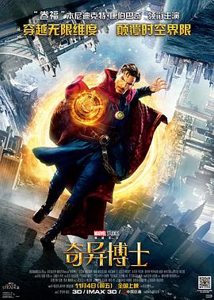

7.6
奇异博士
Doctor Strange
2016
美国
评分 7.6
导演:
斯科特·德瑞克森
演员:
本尼迪克特·康伯巴奇 / 蒂尔达·斯文顿 / 麦斯·米科尔森 / 切瓦特·埃加福 / 瑞秋·麦克亚当斯 / 迈克尔·斯图巴 / 本尼迪克特·王
类型:
冒险,动作,奇幻
剧情简介
斯蒂芬·斯特兰奇是一位才华横溢、技艺精准的神经外科医生，职业生涯一路顺风，傲气与自信几乎成为他鲜明的标签。然而，一场突如其来的车祸让他的双手严重受损，手术能力彻底崩塌。曾经掌控生命的天才，如今陷入深深绝望，传统医学无法拯救他的未来，他的世界一瞬间化为废墟。在不断尝试无果后，他孤注一掷前往尼泊尔，希望寻求传说中能够治愈身心的神秘之力。在卡玛泰姬，他遇见了冷静强大的“古一法师”，第一次被迫面对自身狭隘的认知，被引领进入充满多维、幻象与能量的魔法世界。斯特兰奇从最初的怀疑与抗拒，到逐渐掌握咒术、传送门与时间魔法，他的思维与能力在修行中不断扩张，也开始意识到力量的真正意义。与此同时，古一的叛徒卡西利亚斯正试图撕裂世界边界，让强大而危险的黑暗维度渗入现实。他的行动让整个世界陷入临近崩溃的危局。尚未完全成熟的斯特兰奇被迫踏入战场，一边理解魔法的哲学与责任，一边直面与常规逻辑完全不同的威胁。从纽约圣所到镜像空间的追逐战，他不断在恐惧与勇气之间寻找平衡。影片在视觉上构筑壮丽的维度折叠与魔法交锋，也展现斯特兰奇从自我中心的外科医生，成长为愿意牺牲自我、守护世界的法师。他的旅程既是身体的救赎，也是心灵的重生。